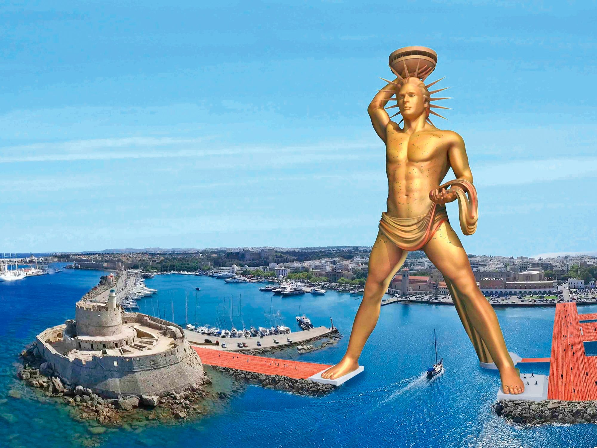

Kolos Rodyjski - Gigantyczna Statua Heliosego
Kolos był gigantycznym posągiem boga słońca, Heliosem, postawionym w porcie na Rodos. Mierzył około 33 metrów wysokości i był wykonany z brązu. Chociaż często przedstawia się go stojącego w rozkroku nad wejściem do portu, historycy uważają, że stał on na marmurowym cokole.
Kolos przetrwał zaledwie 56 lat, zniszczony przez silne trzęsienie ziemi w 226 r. p.n.e. Jego ruiny leżały na ziemi przez ponad 800 lat, zanim zostały sprzedane na złom.